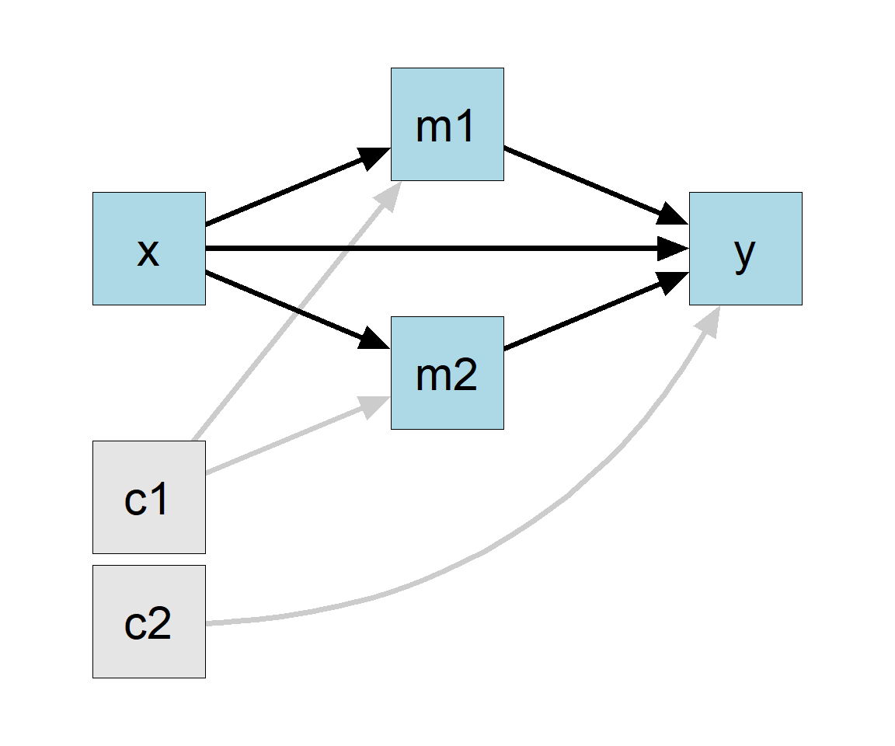

This tutorial shows how to use the R package manymome(S. F. Cheung & Cheung, 2023), a flexible package for mediation analysis, to test indirect effects in a parallel mediation model fitted by multiple regression.
Pre-Requisite
Readers are expected to have basic R skills and know how to fit a linear regression model using lm().
The package manymome can be installed from CRAN:
install.packages("manymome")
Data
This is the data file for illustration, from manymome:
Call:
lm(formula = m1 ~ x, data = data_parallel)
Coefficients:
Estimate Std. Error t value Pr(>|t|)
(Intercept) 9.0203 1.1288 7.991 2.65e-12 ***
x 0.9247 0.1128 8.200 9.49e-13 ***
---
Signif. codes: 0 '***' 0.001 '**' 0.01 '*' 0.05 '.' 0.1 ' ' 1
Residual standard error: 1.125 on 98 degrees of freedom
Multiple R-squared: 0.4069, Adjusted R-squared: 0.4009
F-statistic: 67.24 on 1 and 98 DF, p-value: 9.488e-13
summary(model_m2)
Call:
lm(formula = m2 ~ x, data = data_parallel)
Coefficients:
Estimate Std. Error t value Pr(>|t|)
(Intercept) 2.5066 1.1248 2.229 0.028128 *
x 0.3921 0.1124 3.490 0.000726 ***
---
Signif. codes: 0 '***' 0.001 '**' 0.01 '*' 0.05 '.' 0.1 ' ' 1
Residual standard error: 1.121 on 98 degrees of freedom
Multiple R-squared: 0.1105, Adjusted R-squared: 0.1015
F-statistic: 12.18 on 1 and 98 DF, p-value: 0.000726
summary(model_y)
Call:
lm(formula = y ~ m1 + m2 + x, data = data_parallel)
Coefficients:
Estimate Std. Error t value Pr(>|t|)
(Intercept) 2.4554 2.6015 0.944 0.3476
m1 0.4784 0.1861 2.571 0.0117 *
m2 0.4684 0.1867 2.508 0.0138 *
x 0.3003 0.2646 1.135 0.2593
---
Signif. codes: 0 '***' 0.001 '**' 0.01 '*' 0.05 '.' 0.1 ' ' 1
Residual standard error: 2.017 on 96 degrees of freedom
Multiple R-squared: 0.2823, Adjusted R-squared: 0.2599
F-statistic: 12.59 on 3 and 96 DF, p-value: 5.212e-07
The direct effect is the coefficient of x in the model predicting y, which is 0.300, and not significant.
The Indirect Effects
The two indirect effects are the product of the a1-path and b1-path and that of the a2-path and b2-path, respectively:
x -> m1 -> y
Computed by a1 × b1
x -> m2 -> y
Computed by a2 × b2
To test these indirect effects, one common method is nonparametric bootstrapping MacKinnon et al. (2002). This can be done easily by indirect_effect() from the package manymome.
Combine the Regression Results
We first combine the regression models by lm2list() into one object to represent the whole model (Figure 1):1
x: The name of the x variable, the start of the indirect path.
y: The name of the y variable, the end of the indirect path.
m: The name of the mediator, m1 in the above example.
fit: The regression models combined by lm2list().
boot_ci: If TRUE, bootstrap confidence interval will be formed.
R, the number of bootstrap samples. It is fast for regression models and I recommend using at least 5000 bootstrap samples or even 10000, because the results may not be stable enough if indirect effect is close to zero (an example can be found in S. F. Cheung & Pesigan, 2023).
seed: The seed for the random number generator, to make the resampling reproducible. This argument should always be set when doing bootstrapping.
By default, parallel processing will be used and a progress bar will be displayed.
The other indirect effect can be computed similarly:
Just typing the name of the output can print the major results
ind1
== Indirect Effect ==
Path: x -> m1 -> y
Indirect Effect: 0.442
95.0% Bootstrap CI: [0.103 to 0.803]
Computation Formula:
(b.m1~x)*(b.y~m1)
Computation:
(0.92471)*(0.47840)
Percentile confidence interval formed by nonparametric bootstrapping
with 5000 bootstrap samples.
Coefficients of Component Paths:
Path Coefficient
m1~x 0.925
y~m1 0.478
ind2
== Indirect Effect ==
Path: x -> m2 -> y
Indirect Effect: 0.184
95.0% Bootstrap CI: [0.027 to 0.402]
Computation Formula:
(b.m2~x)*(b.y~m2)
Computation:
(0.39215)*(0.46844)
Percentile confidence interval formed by nonparametric bootstrapping
with 5000 bootstrap samples.
Coefficients of Component Paths:
Path Coefficient
m2~x 0.392
y~m2 0.468
As shown above, the indirect effect through m1 is 0.442. The 95% bootstrap confidence interval is [0.103; 0.803]. The indirect effect is positive and significant.
As shown above, the indirect effect through m2 is 0.184. The 95% bootstrap confidence interval is [0.027; 0.402]. The indirect effect is positive and significant.
For transparency, the output also shows how the indirect effect was computed.
Standardized Indirect Effect
To compute and test the standardized indirect effect, with both the x-variable and y-variable standardized, add standardized_x = TRUE and standardized_y = TRUE:
== Indirect Effect (Both 'x' and 'y' Standardized) ==
Path: x -> m1 -> y
Indirect Effect: 0.189
95.0% Bootstrap CI: [0.045 to 0.340]
Computation Formula:
(b.m1~x)*(b.y~m1)*sd_x/sd_y
Computation:
(0.92471)*(0.47840)*(1.00306)/(2.34506)
Percentile confidence interval formed by nonparametric bootstrapping
with 5000 bootstrap samples.
Coefficients of Component Paths:
Path Coefficient
m1~x 0.925
y~m1 0.478
NOTE:
- The effects of the component paths are from the model, not
standardized.
ind2_stdxy
== Indirect Effect (Both 'x' and 'y' Standardized) ==
Path: x -> m2 -> y
Indirect Effect: 0.079
95.0% Bootstrap CI: [0.013 to 0.166]
Computation Formula:
(b.m2~x)*(b.y~m2)*sd_x/sd_y
Computation:
(0.39215)*(0.46844)*(1.00306)/(2.34506)
Percentile confidence interval formed by nonparametric bootstrapping
with 5000 bootstrap samples.
Coefficients of Component Paths:
Path Coefficient
m2~x 0.392
y~m2 0.468
NOTE:
- The effects of the component paths are from the model, not
standardized.
The standardized indirect effect through m1 is 0.189. The 95% bootstrap confidence interval is [0.045; 0.340], significant.
The standardized indirect effect through m2 is 0.079. The 95% bootstrap confidence interval is [0.013; 0.166], significant.
Total Indirect Effect
Suppose we would like to compute the total indirect effects from x to y through the two parallel paths. This can be done by “adding” the indirect effects computed above, simply by using the + operator:
ind_total <- ind1 + ind2
ind_total
== Indirect Effect ==
Path: x -> m1 -> y
Path: x -> m2 -> y
Function of Effects: 0.626
95.0% Bootstrap CI: [0.276 to 1.065]
Computation of the Function of Effects:
(x->m1->y)
+(x->m2->y)
Percentile confidence interval formed by nonparametric bootstrapping
with 5000 bootstrap samples.
The standardized total indirect effect can be computed similarly:
ind_total_stdxy <- ind1_stdxy + ind2_stdxy
ind_total_stdxy
== Indirect Effect (Both 'x' and 'y' Standardized) ==
Path: x -> m1 -> y
Path: x -> m2 -> y
Function of Effects: 0.268
95.0% Bootstrap CI: [0.122 to 0.431]
Computation of the Function of Effects:
(x->m1->y)
+(x->m2->y)
Percentile confidence interval formed by nonparametric bootstrapping
with 5000 bootstrap samples.
The total indirect effect through the two paths is 0.626. The 95% bootstrap confidence interval is [0.276; 1.065], significant.
The total standardized indirect effect through the two paths is 0.268. The 95% bootstrap confidence interval is [0.122; 0.431]
Difference in Indirect Effects
The indirect effects through the two paths are substantially different (0.442 vs. 0.184). Suppose we would like to compare the two paths by computing the difference in indirect effect and forming the bootstrap confidence interval of this difference. This can be done by literally computing the difference using the - operator:
ind_diff <- ind1 - ind2
ind_diff
== Indirect Effect ==
Path: x -> m1 -> y
Path: x -> m2 -> y
Function of Effects: 0.259
95.0% Bootstrap CI: [-0.165 to 0.659]
Computation of the Function of Effects:
(x->m1->y)
-(x->m2->y)
Percentile confidence interval formed by nonparametric bootstrapping
with 5000 bootstrap samples.
Interestingly, despite the apparent magnitude of the difference, the two indirect effects are not significantly different, probably due to the small sample size (100).
The difference in standardized indirect effects (0.189 vs. 0.079) can be computed similarly:
ind_stdxy_diff <- ind1_stdxy - ind2_stdxy
ind_stdxy_diff
== Indirect Effect (Both 'x' and 'y' Standardized) ==
Path: x -> m1 -> y
Path: x -> m2 -> y
Function of Effects: 0.111
95.0% Bootstrap CI: [-0.072 to 0.281]
Computation of the Function of Effects:
(x->m1->y)
-(x->m2->y)
Percentile confidence interval formed by nonparametric bootstrapping
with 5000 bootstrap samples.
A Parallel Mediation Model With Some Control Variables
Suppose we want to fit a more complicated model, with some other variables included, such as control variables c1 and c2 in the dataset (Figure 5).
Figure 5
Although there are more predictors (c1 and c2) and more direct and indirect paths (e.g., c1 to y through m1), there are still only just three regression models. We can fit them as usual by lm():
== Indirect Effect ==
Path: x -> m1 -> y
Indirect Effect: 0.427
95.0% Bootstrap CI: [0.095 to 0.804]
Computation Formula:
(b.m1~x)*(b.y~m1)
Computation:
(0.87694)*(0.48642)
Percentile confidence interval formed by nonparametric bootstrapping
with 5000 bootstrap samples.
Coefficients of Component Paths:
Path Coefficient
m1~x 0.877
y~m1 0.486
ind2_2
== Indirect Effect ==
Path: x -> m2 -> y
Indirect Effect: 0.140
95.0% Bootstrap CI: [0.006 to 0.359]
Computation Formula:
(b.m2~x)*(b.y~m2)
Computation:
(0.29677)*(0.47128)
Percentile confidence interval formed by nonparametric bootstrapping
with 5000 bootstrap samples.
Coefficients of Component Paths:
Path Coefficient
m2~x 0.297
y~m2 0.471
The indirect effect through m1 is 0.427. The 95% bootstrap confidence interval is [0.095; 0.804], slightly decreased after the control variables are included, but still significant.
The indirect effect through m2 is 0.140. The 95% bootstrap confidence interval is [0.006; 0.359], decreased after the control variables are included, but still significant.
Standardized indirect effects can also be computed and tested just by adding standardized_x = TRUE and standardized_y = TRUE.
The total indirect effect can also be computed using +:
ind2_total <- ind2_1 + ind2_2ind2_total
== Indirect Effect ==
Path: x -> m1 -> y
Path: x -> m2 -> y
Function of Effects: 0.566
95.0% Bootstrap CI: [0.227 to 1.020]
Computation of the Function of Effects:
(x->m1->y)
+(x->m2->y)
Percentile confidence interval formed by nonparametric bootstrapping
with 5000 bootstrap samples.
No Limit On The Number of Mediators
Although the example above only has two mediators, there is no limit on the number of mediators in the parallel mediation model. Just fit all the regression models predicting the mediators, combine them by lm2list(), and compute the indirect effect as illustrated above for each path.
Easy To Fit Models With Only Some Paths Included
Although control variables predict all variables other than x, it is easy to fit a model with only paths theoretically meaningful:
Just fit the desired models by lm() and use indirect_effect() as usual.
For example, suppose this is the desired model (Figure 6):

Figure 6
The control variable c1 only predicts m1 and m2, and the control variable c2 only predicts y.
We just fit the three models using lm() based on the hypothesized model:
# Predict m1model_m1 <-lm(m1 ~ x + c1,data = data_parallel)# Predict m2model_m2 <-lm(m2 ~ x + c1,data = data_parallel)# Predict ymodel_y <-lm(y ~ m1 + m2 + x + c2,data = data_parallel)# Combine the modelsfull_model <-lm2list(model_m1, model_m2, model_y)
Then the indirect effects can be computed as before.
Advanced Topics
Customize the Printout
The printout can be customized in several ways. For example:
x m1 m2 y c1 c2
1 NA 20.77622 8.977183 16.85574 2.385207 4.009182
2 NA NA 6.518089 15.99256 2.585124 5.980229
3 NA NA NA NA 2.667239 4.170771
4 9.272600 NA NA NA 2.021972 3.819458
5 9.845673 18.29027 NA NA 3.796376 4.375370
6 9.147475 18.21173 7.167020 NA 3.686640 5.283557
If we do the regression separately, the cases used in the two models will be different:
If they are combined by lm2list(), an error will occur. The function lm2list() will compare the data to see if the cases used are likely to be different.2
Error in check_lm_consistency(...): The data sets used in the lm models do not have identical sample size. All lm models must be fitted to the same sample.
A simple (though not ideal) solution is to use listwise deletion, keeping only cases with complete data. This can be done by na.omit():
The package manymome has no inherent limitations on the number of variables and the form of the mediation models. An illustration using a more complicated models with both parallel and serial mediation paths can be found in this online article.
Other features of manymome can be found in the website for it.
Disclaimer: Similarity Across Tutorials
To keep each tutorial self-contained, some sections are intentionally repeated nearly verbatim (“recycled”) to reduce the hassle to read several articles to learn how to do one task.
Cheung, M. W.-L. (2009). Comparison of methods for constructing confidence intervals of standardized indirect effects. Behavior Research Methods, 41(2), 425–438. https://doi.org/10.3758/BRM.41.2.425
Cheung, S. F., & Cheung, S.-H. (2023). Manymome: AnR package for computing the indirect effects, conditional effects, and conditional indirect effects, standardized or unstandardized, and their bootstrap confidence intervals, in many (though not all) models. Behavior Research Methods. https://doi.org/10.3758/s13428-023-02224-z
Cheung, S. F., & Pesigan, I. J. A. (2023). Semlbci: AnR package for forming likelihood-based confidence intervals for parameter estimates, correlations, indirect effects, and other derived parameters. Structural Equation Modeling: A Multidisciplinary Journal, 30(6), 985–999. https://doi.org/10.1080/10705511.2023.2183860
MacKinnon, D. P., Lockwood, C. M., Hoffman, J. M., West, S. G., & Sheets, V. (2002). A comparison of methods to test mediation and other intervening variable effects. Psychological Methods, 7(1), 83–104. http://www.ncbi.nlm.nih.gov/pmc/articles/PMC2819363/
The function lm2list() checks not only sample sizes. Even if the sample sizes are the same, an error will still be raised if there is evidence suggesting that the samples are not the same, such as different values of x in the two models.↩︎